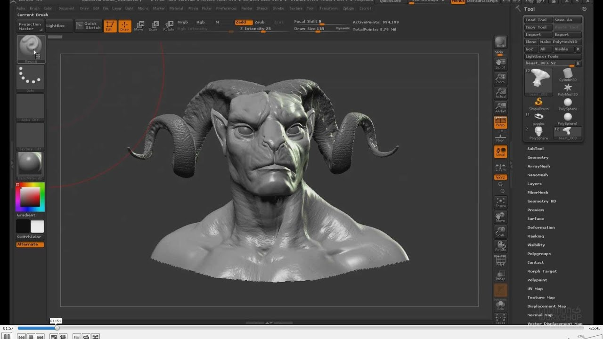

Blender — крутейший бесплатный 3D-редактор! В нем удобно и быстро моделировать, скульптить, анимировать. Есть симуляция физики, встроенная в 3D-окружение 2D-анимация. Blender имел репутацию программы, сложной для изучения. Но с тех пор как Blender стал проектом с открытым исходным кодом, были добавлены полные контекстные меню ко всем функциям, а использование инструментов сделано более логичным и гибким.

Характерной особенностью пакета Blender выступает его небольшой размер по сравнению с другими популярными пакетами для 3D-моделирования. Широко используются горячие клавиши. Интерфейс можно с легкостью настроить под себя.
Zbrush— мощное приложение для трехмерного моделирования. Обладает большим количеством инструментов для профессиональной работы с 3D объектами.У пользователя есть возможность детально работать с текстурами, загружать новые кисти. Увы, не работает с ОС Windows XP. Бесплатная версия ZBrush действует 45 днейю
Отличительной особенностью данного ПО является имитация процесса «лепки» трёхмерной скульптуры, усиленного движком трёхмерного рендеринга в реальном времени, что существенно упрощает процедуру создания требуемого трёхмерного объекта. Каждая точка (называемая пиксель) содержит информацию не только о своих координатах XY и значениях цвета, но также и глубине Z, ориентации и материале. Это значит, что вы не только можете «лепить» трёхмерный объект, но и «раскрасить» его, рисуя штрихами с глубиной.

Autodesk 3ds Max — профессиональное программное обеспечение для 3D-моделирования, анимации и визуализации при создании игр и проектировании. В настоящее время разрабатывается и издается компанией Autodesk. 3ds Max предоставляет обширный гибкий инструментарий для создания первоклассных проектов с полным контролем художественного замыслаю Данная программа создана для профессионалов.

С помощью Autodesk 3ds Max создаются масштабные миры в компьютерных играх, визуализируются высококачественные архитектурные проекты, моделируются объекты интерьера с высокой степенью детализации.